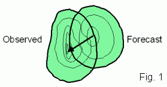
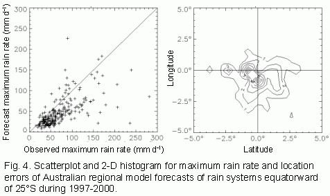
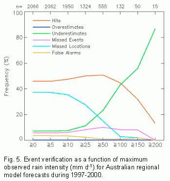

In addition, the verified entities themselves may be classified as "hits", "misses", etc., according to how close the forecast location was to the observed location, and how well the maximum intensity was represented by the forecast. This event verification can be useful for monitoring forecast performance.
The CRA verification method is described below using rain forecasts as an example. The method is described in detail by Ebert and McBride (2000).
When we verify a spatial forecast by eye, we compare the mapped forecast and observations side by side, generally focussing on one or more features of interest. The first things we notice are whether each feature was forecast to be in the right place, and whether it had the correct size, shape, and magnitude.
CRA verification is an intuitive approach that quantifies the results of "eyeball", or visual, verification. It focuses on individual weather systems as opposed to the entire domain, enabling the errors in each event to be separately assessed. It verifies the properties of the forecast entities against the properties of the corresponding observed entities. A big advantage of this approach over more traditional verification methods is that the location error of the forecast entity can be quantified.
The choice of contour used to define the CRA depends on the application. For example, 1 mm hr-1 could be used to include all rain in a radar-based nowcast, while 20 mm d-1 could be used to isolate the bull's eye in a daily rainfall forecast.
The best match can be determined in a number of ways: (a) by maximizing the correlation coefficient, (b) by minimizing the total squared error, (c) by maximizing the overlap of the two entities, and (d) by overlaying the centres of gravity of the two entities. The domain over which these statistics are calculated includes all gridpoints in the forecast and observed entities, before and after translation. When the forecast matches the observations quite well, all of the methods will give very similar location errors. However, not all forecasts are well behaved, and it may be necessary to try the various matching methods to see which one gives the most intuitively pleasing results for the particular forecast application being assessed.
MSEtotal = MSEdisplacement + MSEvolume + MSEpattern
The difference between the mean square error before and after translation is the contribution to total error due to displacement,
MSEdisplacement = MSEtotal - MSEshifted
The error component due to volume represents the bias in mean intensity,
MSEvolume = ( F - X )2
where F and X are the CRA mean forecast and observed values after the shift. The pattern error accounts for differences in the fine structure of the forecast and observed fields,
MSEpattern = MSEshifted - MSEvolume
Note that it may be possible to do the error decomposition when other pattern matching criteria are used. However, it is not guaranteed because the mean squared error may not decrease for the "best" match, giving in this case a negative pattern error.
When the CRA verification is applied to a large number of
entities, it is possible to diagnose systematic errors in the
forecasts (e.g., Ebert and McBride, 2000). An example is shown
below. The dominant sources of error can also be diagnosed.

The specific criteria for what constitutes "well predicted" depends on the needs of the user. For example, for spatial 24 h rain forecasts Ebert and McBride (2000) specified that (a) the location error must be within one effective radius of the rain system, but not more than 5 degrees latitude/longitude, and (b) the forecast maximum rain rate must be within one category of the observed (categories bounded by 1, 2, 5, 10, 20, 50, 100, 150, and 200 mm d-1).
Based on the designated location and intensity criteria, an event contingency table can be constructed:
| Intensity | ||||
| Too little | Approx. correct | Too much | ||
| Location | Close | Underestimate | Hit | Overestimate |
| Far | Missed Event | Missed location | False alarm |
A missed event can also occur when an entity was observed but not predicted at all. Similarly, a false alarm can occur when an entity was predicted but did not occur. While in these cases it is impossible to determine a location or intensity error, it is still important to include them in the event verification.
Event verification for a large number of CRAs can give useful information on the nature of the forecast errors. These descriptions could prove a useful tool for monitoring forecast performance over time.
An example for the Australian regional model is shown below,
where the results are stratified according to the observed maximum
intensity of the events. For all events together (threshold of 0 mm
d-1) the event hit rate was close to 50%, while the most
common type of error was a missed location. The event hit rate
improves slightly as the rain events become more intense, then
rapidly drops when the observed intensity exceeds 100 mm
d-1. Although the forecast location was good for these
very heavy rain events, their intensity was underestimated by the
model.

(a) It is intuitive, quantifying what we can see by eyeThere are also some drawbacks to this approach:
(b) it estimates the location error in the forecast,
(c) the total error can be decomposed into contributions from location, intensity, and pattern,
(d) forecast events can be categorized as hits, misses, etc. These descriptions could prove a useful tool for monitoring forecast performance over time.
(a) Because it depends on pattern matching, it must be possible to associate entities in the forecast with entities in the observations. This means that the forecast must be halfway decent. The verification results for a large number of CRAs will be biased toward the "decent" forecasts, i.e., those for which location and intensity errors could reliably be determined.The CRA verification methodology has so far been successfully applied to 6- and 24-hourly numerical precipitation forecasts (Ebert and McBride, 2000; Ebert et al., 2002a; Loughe et al., 2002), radar-based rainfall nowcasts (Ebert et al., 2002b), convective outlooks, and satellite precipitation estimates (Ebert, 2002).
(b) The user must choose the pattern matching method as well as the isoline used to define the entities. The verification results will be somewhat dependent on these choices.
(c) When a forecast and/or observed entity extends across the boundary of the domain it is not possible to be sure whether the pattern match is optimal. If the CRA has a reasonably large area still within the domain then the probability of a good match is high. Ebert and McBride (2000) suggest applying a minimum area criterion to address this issue.